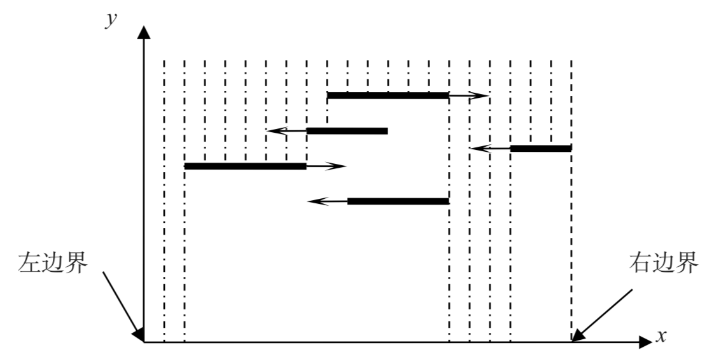

Comet OJ
Comet OJ第一行有四个整数$N，W，T，V$。$N$表示自动伞的数目，$W$表示马路的宽度，$T$表示需要统计从开始下雨到多长时间后的降雨情况，$V$表示单位面积单位时间内的降雨体积。
为了描述方便，我们画出了一个如图2所示的天空中五把伞的剖面图，取马路左边界为原点，取向右为$x$轴正方向，取向上为$y$轴正方向，建立平面直角坐标系。这样，每把自动伞都可以看作平面上的一条线段。

接下来的$N$行，每行用三个整数描述一把自动伞。第一个数$x$是伞的初始位置，用它左端点的横坐标表示。第二个数$l$是伞的长度，即$x$方向上的尺寸。第三个数$v$是伞的速度，$v$的大小表示移动的速率。如果$v>0$，表示开始时伞向右移动；如果$v<0$，表示开始时伞向左移动；如果$v=0$，表示伞不动。